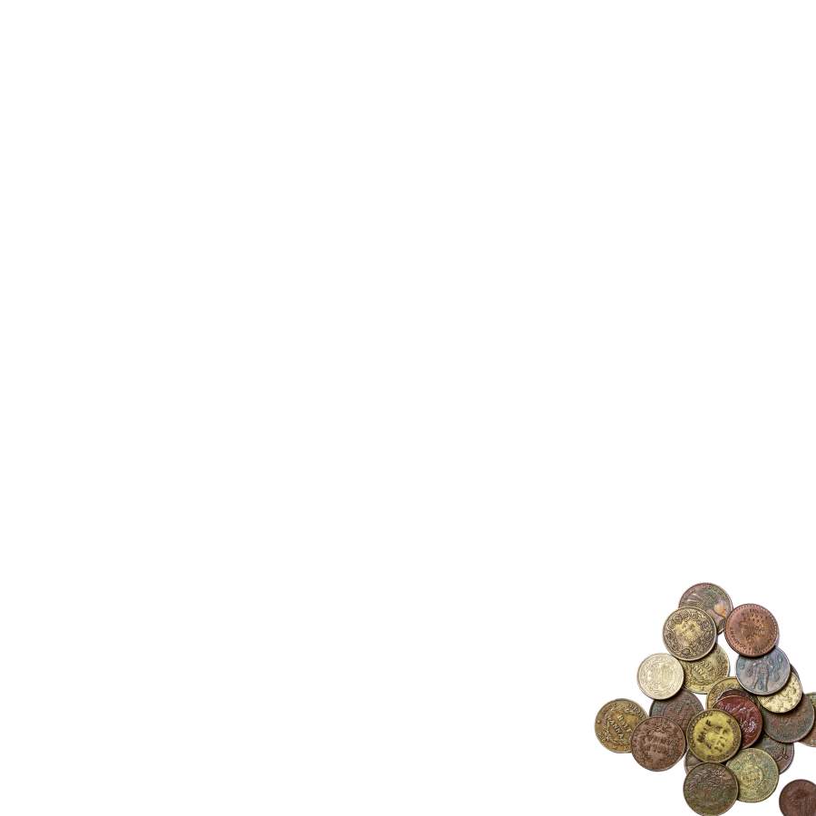
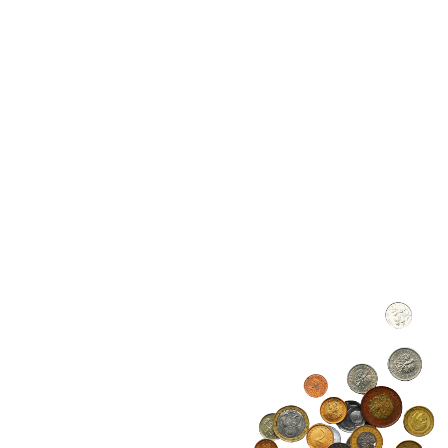
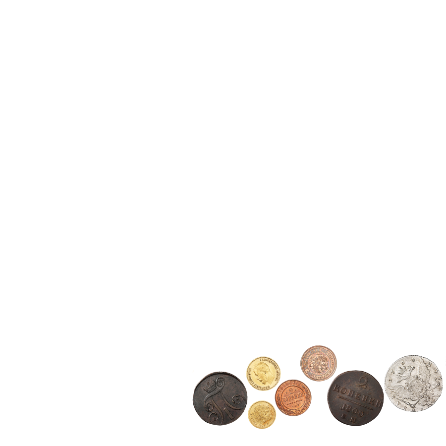
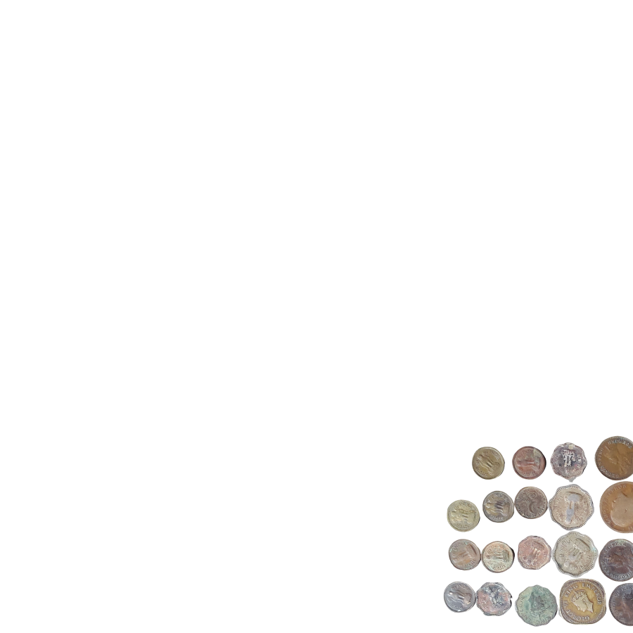
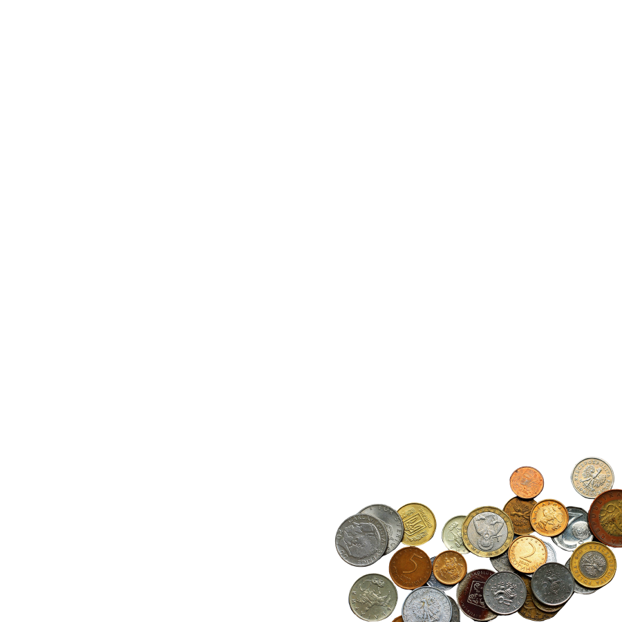
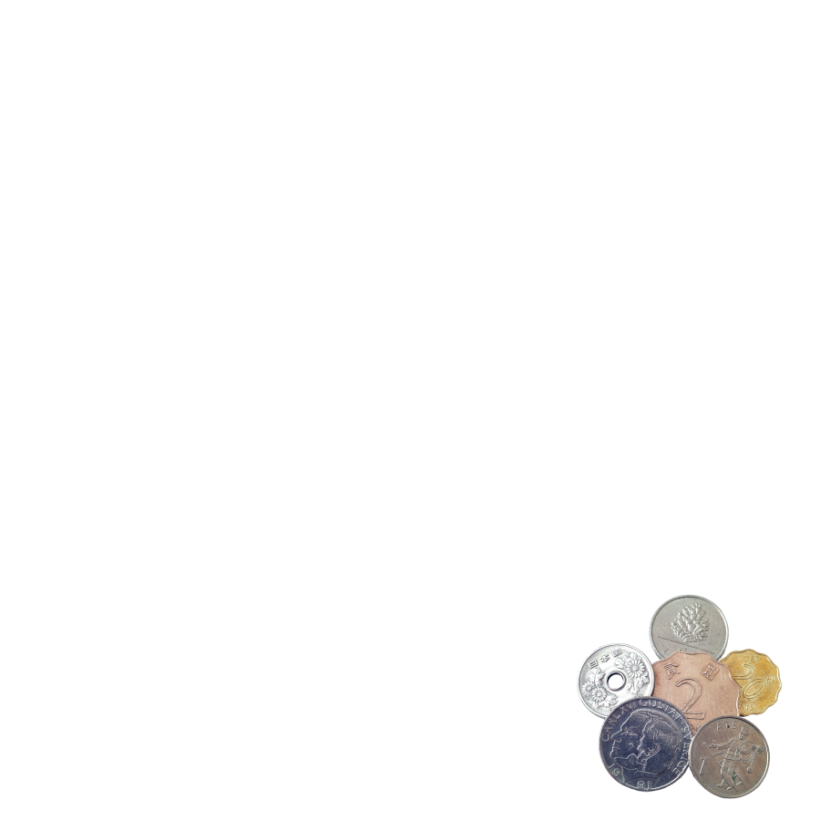

Где продать редкие монеты: варианты от аукционов до антикварных лавок
Главное, к чему стоит готовиться, если продаете монеты, — у вас их купят в 2—3 раза дешевле, чем они стоят.
Нумизматы хотят пополнить свою коллекцию со скидкой, а спекулянты — заработать на перепродаже.
Выбрали проверенные места, где можно продать редкие монеты дешево и быстро и где можно выждать и продать дороже.
Интернет-аукционы
Лучший вариант для тех, кто готов подождать. Торги между участниками определяют справедливую цену. Жители небольших городов смогут отправить монеты по почте: система рейтинга и гарантий позволит вычислить мошенников и сохранить деньги

Нумизматические клубы
Клубы по интересам есть практически в любом крупном городе — поищите местное сообщество нумизматов. Они могут выкупить ваши монеты, но придется поторговаться за свою оценку, иначе продадите в несколько раз дешевле рыночной цены
Примеры: клуб «Нумизмат»

Нумизматические рынки
Самый популярный рынок нумизматов — в Москве, возле метро «Таганская». Там собираются коллекционеры и нумизматы-любители. Таганские цены считаются эталоном. Новичков могут обмануть и купить монету по заниженной цене — лучше изучить ценник заранее
Примеры: Таганский ценник

Банки
Не каждый банк скупает монеты, но даже если скупает, то лишь экземпляры из определенного списка. Обычно это инвестиционные монеты из драгоценных металлов. Список монет и адреса отделений можно найти на сайте банка
Примеры: Сбербанк

Аукционные дома
Туда стоит обращаться, только если вы уверены, что ваши монеты очень дорогие. Сделки придется ждать до полугода, а организаторы заберут до четверти от вырученной суммы
Примеры: Русский нумизматический дом

Доски объявлений
На досках объявлений можно продать все, в том числе и монеты. Реальных нумизматов там немного, так что может пройти много месяцев, прежде чем ваши монеты заметят. Настаивайте на личной встрече и не отправляйте монеты по почте, если не хотите потерять и монеты, и деньги
Примеры: «Юла»
